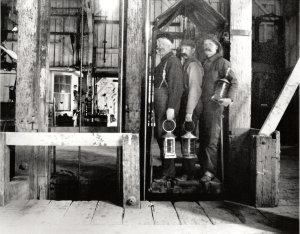
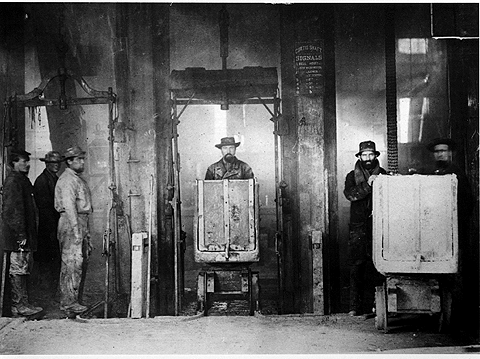

Virginia City became the first industrial city in the west when Ethan and
Hosea Grosh discovered gold in Six-Mile Canyon. They died before they could
strike their claims.

Three miners getting ready to head down to the mines.
|
| In 1859 Henry T.P. Comstock discovered their find
and claimed it was on his property. When the discovery became public in 1859,
prospectors rushed to the area. One big problem was the sticky blue ooze
that stuck to picks and shovels. When they got rid of the ooze they found
rich silver ore worth over $2,000 a ton. As more and more people rushed to
the town it grew into a city, and the most important settlement between Denver
and San Francisco. At its peak over 10,000 miners worked in the Comstock
Lode. |
| As more and more people came the need for lumber increased.
So lumber companies cut down trees all around the city. The settlers wanted
statehood for Nevada and the president needed money to fund the Civil War.
The constitution needed to be delivered quickly to Washington D.C. So the
longest telegraph in history was sent. It took 12 hours to type and it cost
over $4,000. Nevada became a state on October 31, 1864. During the war, Nevada
gave over 45 million to the union. |
| At its peak over 30,000 people lived in Virginia City.
The International hotel was six stories high and had the first elevator in
the west. It was called the “rising room”. One famous resident of the city
was Mark Twain. |
| A fire nearly destroyed the town in 1875, but it was
rebuilt in about a year. |
| The Comstock’s richest mine was the Ophir, and was
priced at $4,000 per foot. |
The main difference between California and the Comstock was that you had to
sink shafts deep into the ground to get the riches out. In California it
was either on the surface or in streams. |
The temperature in the mines went
up five degrees every 100 feet. After 3,000 feet there were clouds of steam
that reduced the work to 15 minutes each hour. There were many dangers of
working 2,000 feet underground like heat exhaustion, pneumonia, and heumation.
|
| Under Virginia City there were about 30 miles of tunnels.
Some underground temperatures reached 130 degrees. Each worker was given
95 pounds of ice to chew on daily! |
| A railroad was built in 1869 to ship the minerals
from Virginia City to Carson City. It took 30 days to lay the track. Now
the ore could be shipped much faster. |
| The Government was losing money due to the free coinage
system. Any person that had any silver could bring it in to a mint and it
would be turned into silver coins. So instead of halting silver coins, the
Government opened a mint in Carson City, Nevada. A new silver coin was made
also. It was called the Morgan Dollar. |
| Success Stories |
John W. Mackay, who was Irish born, heard about the Comstock and then walked
250 miles from San Francisco to Virginia City, Nevada. After three years of
working, he heard about a lucrative claim with and old partner. He left his
site and tracked down the partner who was fighting for the Confederate states,
and bought his share for $500 on a battlefield. Then, he returned to Virginia
City and became one of the richest mine owners on the Comstock. |
George Hearst was the founder of the news tycoon and was among the first wave
of people to come and look for gold. He had been working unsuccessfully in
California since 1850. He came to the Comstock in 1859, bought a mine for
$3,000, went back to California to get the money, and brought some workers
back and started digging. Trying to get done before winter, they were able
to get out 38 tons of good ore in two months. They then loaded it onto some
mules and dragged it over a mountain pass to a San Francisco smelter where
they got over $90,000 in profit. |
Dan DeQuille and the Territorial Enterprise
|
Dan DeQuille worked for the Territorial Enterprise during the development
of the Comstock Lode. As a reporter, DeQuille wrote many stories about the
mines of Virginia City during the 1850’s through the late 1870’s. He was thought
of as an expert on mining. All his knowledge of these mines was published
in the Enterprise. During the rush on the Comstock the Enterprise had to hire
another reporter, Mark Twain, to keep up. In 1876 DeQuille decided to write
about the history of Virginia City. The book was called “The Big Bonanza”
the history of the Comstock Lode.
|
| Improvements |
| Phillip Deideshimer built a structure similar to a
honey comb to try and prevent cave-ins. His design was called the Square
Set and it was soon used throughout the western mines. |
| In the late 1860’s two air pumps were installed to
blow cool air through the pipes. |
| The Gas Lamps |
After getting complaints about the dark streets, gaslights were ordered. The
Commonwealth was the name of the ship sent to give Virginia City the equipment
needed to create a gas plant. A confederate raider ship, the Alabama raided
the Commonwealth and took the equipment. But soon after the ship was raided
the new gas making equipment arrived. Virginia City was now light. The gas
company made the gas from coke. Michael Welch was the town’s official lamplighter.
He received $50 a month for his work |
| Quotes |
“The articles listed here are excerpted from his book as those articles I
feel best describe the life and times at the mines and Virginia City. I hope
you enjoy them as much as I do.” – Keith Whittle editor |
“ Some of our people have thought pretty well about Jeff Davis, but not a
single one of us thought of his wanting our gas-ing machine. We are all down
on him! Every time we break our shins traveling out dark streets we curse
Jeff Davis.” – Dan DeQuille |
| The Comstock Lode produced over $400 million in gold
and silver and is still the richest silver deposit known in the U.S. The
flow of water and the halt of silver coins brought the town’s operations
to an end in 1898. Of the 17,000 people that came to Virginia City in 1859,
only a few dozen struck it rich. |
The Virginia City National Landmark District was founded in 1969. It is one
of the largest in the nation |